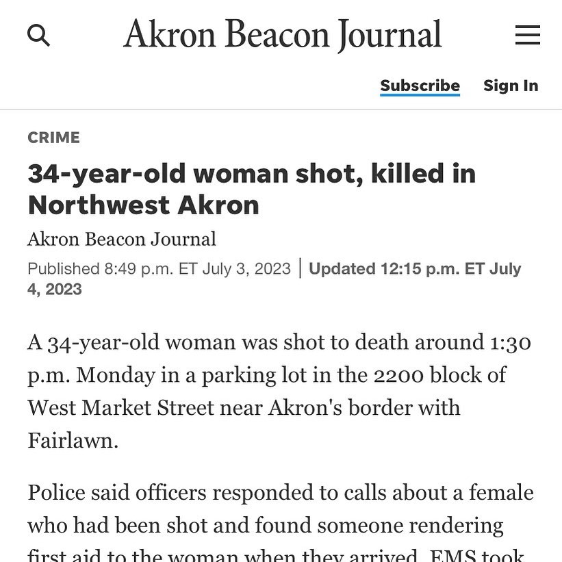

Timeline photos
This is Walhaven. Ward 8. The rich side of town where this isn’t supposed to happen.
This is the result of income inequality. The result of “I got mjne and I want more.”
Paris isn’t rioting anymore. They are targeting infrastructure and government.
A riot may be the language of the unheard. But an insurrection is intentional terrorism. The people WILL be heard.
That’s not what this case is. But watch. You think you are “terrified” of global warming, Democrats. Wait till you experience terrorism.
Place: Akron, Ohio (41.0732, -81.5179)
Address: Akron, OH 44301